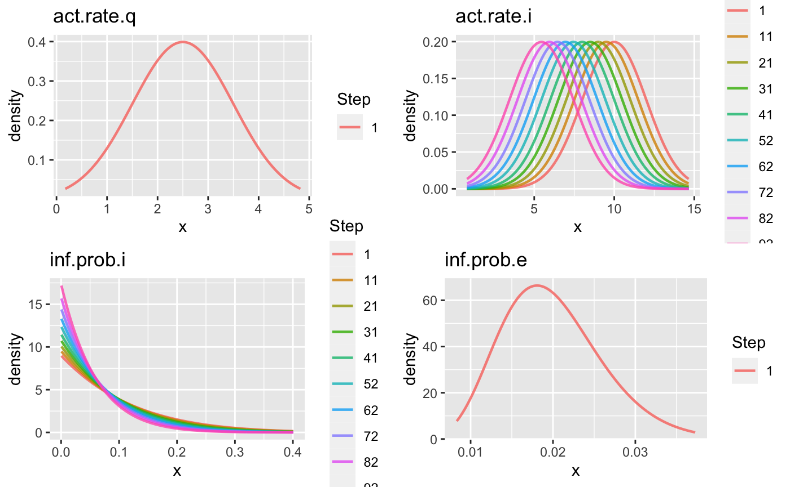
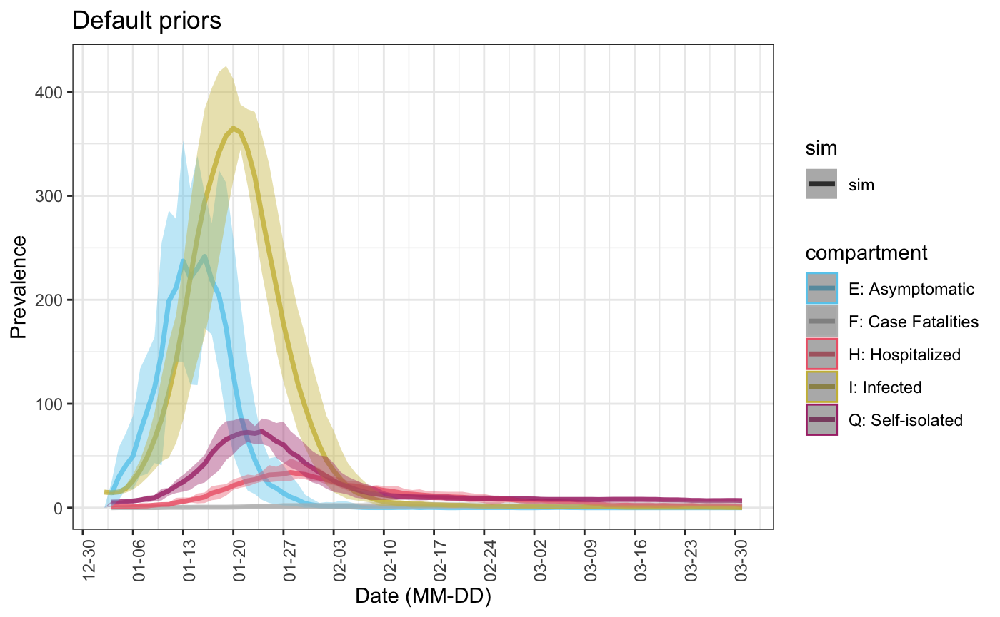

Using stochastic parameters
Last updated: 15 April 2020
stochastic_parameters.Rmdlibrary(sirplus) library(ggplot2) s.num <- 1000 # number susceptible i.num <- 15 # number infected q.num <- 5 # number in self-isolation h.num <- 1 # number in the hospital nsteps <- 101 # number of steps (e.g. days) to simulate nsims <- 20 control <- control_seiqhrf(nsteps = nsteps) init <- init_seiqhrf(s.num = s.num, i.num = i.num, q.num = q.num, h.num = h.num)
Instead of running all nsims simulations with fixed parameter values, sirplus enables the act.rate.* and inf.prob.* (where * is one of i, e and q) to be randomly generated from a probability distribution, which can be seen as a prior.
1. Using fixed parameter values across time with default prior distributions
We use function select_prior to specify priors. If default prior distributions are desired, we only need to input a vector of the names of parameter that are to be generated stochastically.
If not specified, the default values are as follows:
| Variables | Distribution | Parameters (of the prior distribution) and default values |
|---|---|---|
| act.rate.* | Gaussian |
mean = param$act.rate.* and sd = 0.1
|
| inf.prob.* | Beta |
a = 50 and b is calculated s.t. the expectation equals param$inf.prob.*
|
param <- param_seiqhrf() priors0 <- select_prior(param, c("act.rate.q", "act.rate.i", "inf.prob.i", "inf.prob.e")) priors0 ## Prior distributions for SEIQHRF Parameters ## =========================================== ## act.rate.q : N( mean = 2.5 , sd = 0.1 ) ## act.rate.i : N( mean = 10 , sd = 0.1 ) ## inf.prob.i : Beta( a = 50 , b = 950 ), mean = 0.05 , s.e = 0.007 ## inf.prob.e : Beta( a = 50 , b = 2450 ), mean = 0.02 , s.e = 0.003 ## ===========================================
We can see how the simulation is different from the baseline simulation which uses constant parameters.
baseline_sim <- seiqhrf(init, control, param) baseline_plot <- plot(baseline_sim, start_date = lubridate::ymd("2020-01-01"), comp_remove = c('s.num', 'r.num'), plot_title = 'Baseline Model') ## Scale for 'colour' is already present. Adding another scale for 'colour', ## which will replace the existing scale. sim0 <- seiqhrf(init, control, param, priors0) sim0_plot <- plot(sim0, start_date = lubridate::ymd("2020-01-01"), comp_remove = c('s.num', 'r.num'), plot_title = 'Default priors') ## Scale for 'colour' is already present. Adding another scale for 'colour', ## which will replace the existing scale. gridExtra::grid.arrange(baseline_plot, sim0_plot) ## Warning: Removed 4 row(s) containing missing values (geom_path). ## Warning: Removed 4 row(s) containing missing values (geom_path).

2. Using time varying prior distributions with default prior distributions
If a parameter in param is a vector (i.e. its value varies over time), its prior distribution will be different across time points as well.
param <- param_seiqhrf(act.rate.i = seq(10, 5, -0.05), inf.prob.i = seq(0.1, 0.05, -0.0005)) priors1 <- select_prior(param, c("act.rate.q", "act.rate.i", "inf.prob.i", "inf.prob.e")) priors1 ## Prior distributions for SEIQHRF Parameters ## =========================================== ## act.rate.q : N( mean = 2.5 , sd = 0.1 ) ## act.rate.i : N( mean = 10, 9.95, 9.9, ... , sd = 0.1, 0.1, 0.1, ... ) ## inf.prob.i : Beta( a = 50, 50, 50, ... , b = 450, 452.513, 455.051, ... ), mean = 0.1, 0.1, 0.099, ... , s.e = 0.013, 0.013, 0.013, ... ## inf.prob.e : Beta( a = 50 , b = 2450 ), mean = 0.02 , s.e = 0.003 ## ===========================================
We can plot the priors and see how they change with time. If nstep is larger than 10, the prior curves of only 10 (evenly distributed) time points will be plotted (see the Step label).
gg1 <- plot(priors1) gridExtra::grid.arrange(gg1[[1]], gg1[[2]], gg1[[3]], gg1[[4]])

sim1 <- seiqhrf(init, control, param, priors1) plot(sim1, start_date = lubridate::ymd("2020-01-01"), comp_remove = c('s.num', 'r.num'), plot_title = 'Priors with larger variance') ## Scale for 'colour' is already present. Adding another scale for 'colour', ## which will replace the existing scale.

3. Using time varying parameter values with the same prior distribution
Another alternative to incorporate time varying parameters, is to simulate only for the first time point, parameters used for the latter time points are shifted from the input values in param by the same amount as the first time point. By doing so, we preserve the desired trend/change of the parameter across time by avoiding excessive variance, while allowing some randomness in the intercept. This can by achieved by simply setting shift_only == TRUE.
priors2 <- select_prior(param, c("act.rate.q", "act.rate.i", "inf.prob.i", "inf.prob.e"), shift_only = TRUE) sim2 <- seiqhrf(init, control, param, priors2)
Take act.rate.i for example, the increment between time points are preserved, but for each simulation the starting point is randomly generated.
## Generated act.rate.i:
## t = 1 t = 2 t = 3
## sim1 10.083 10.033 9.983
## sim2 9.786 9.736 9.686
## sim3 9.994 9.944 9.894
##
##
## Original input of act.rate.i in param:
## t = 1 t = 2 t = 3
## 10.00 9.95 9.904. Using user specified prior distributions
We can also manually specify the parameters in the prior distributions. For example, the following parameter setting results in distributions with larger variance.
priors3 <- select_prior(param, c("act.rate.q", "act.rate.i", "inf.prob.i", "inf.prob.e"), prior.dist = c("gaussian", "gaussian", "beta", "beta"), prior.pars = list(list(sd = 1), list(sd = 2), list(a = 1), list(a = 10))) priors3 ## Prior distributions for SEIQHRF Parameters ## =========================================== ## act.rate.q : N( mean = 2.5 , sd = 1 ) ## act.rate.i : N( mean = 10, 9.95, 9.9, ... , sd = 2, 2, 2, ... ) ## inf.prob.i : Beta( a = 1, 1, 1, ... , b = 9, 9.05, 9.101, ... ), mean = 0.1, 0.1, 0.099, ... , s.e = 0.09, 0.09, 0.09, ... ## inf.prob.e : Beta( a = 10 , b = 490 ), mean = 0.02 , s.e = 0.006 ## =========================================== gg3 <- plot(priors3) gridExtra::grid.arrange(gg3[[1]], gg3[[2]], gg3[[3]], gg3[[4]])

As expected, this leads to a larger variance in simulations as well:
sim3 <- seiqhrf(init, control, param, priors3) plot(sim3, start_date = lubridate::ymd("2020-01-01"), comp_remove = c('s.num', 'r.num'), plot_title = 'Default priors')
